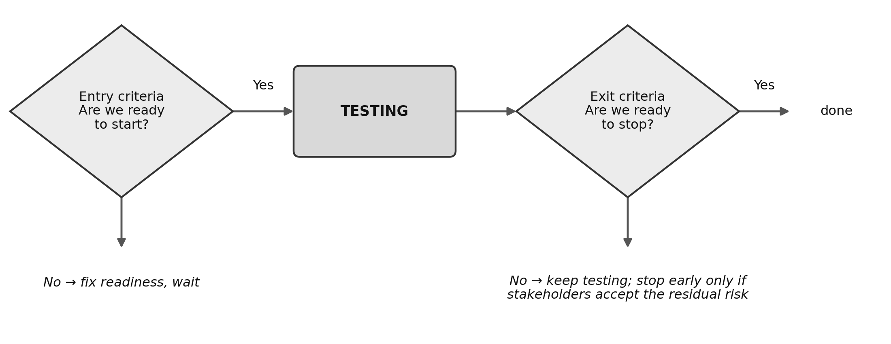
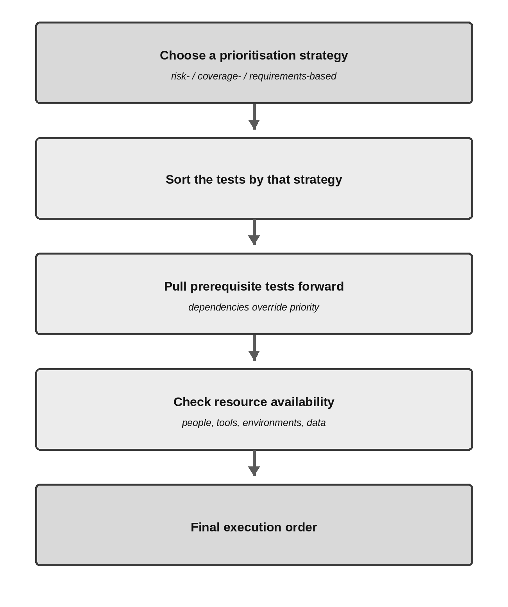
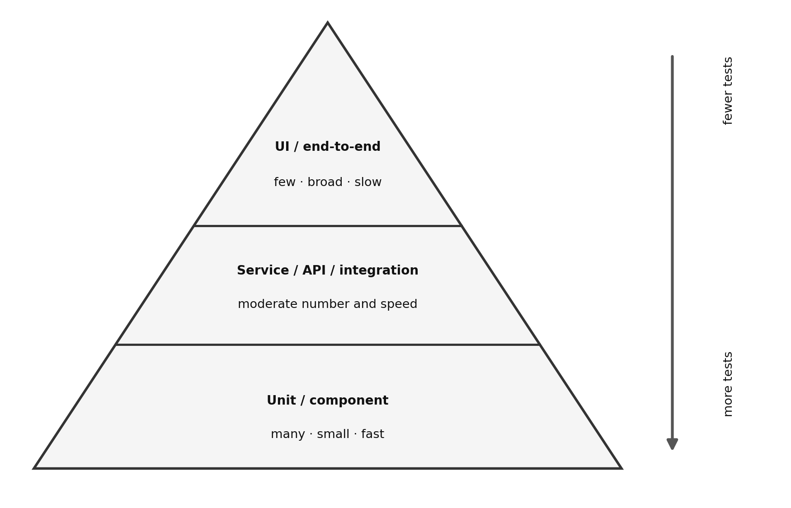
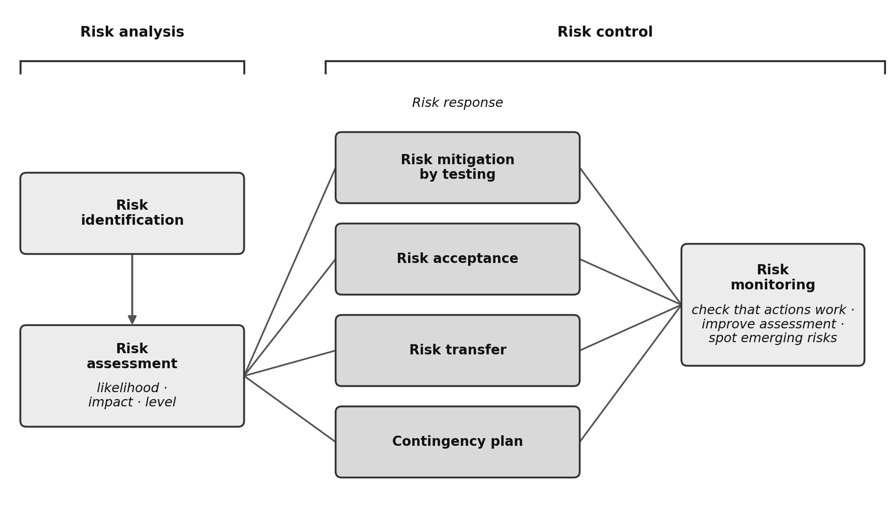

Chapter 5 — Managing the Test Activities
Learning objectives: 16 · K1 4 / K2 9 / K3 3 · Exam questions from this chapter: 9
Keywords: defect management, defect report, entry criteria, exit criteria, product risk, project risk, risk, risk analysis, risk assessment, risk control, risk identification, risk level, risk management, risk mitigation, risk monitoring, risk-based testing, test approach, test completion report, test control, test monitoring, test plan, test planning, test progress report, test pyramid, test strategy, testing quadrants
Together with Chapter 4, this is one of the two heaviest chapters on the exam. It treats testing as a discipline of management, strategy, and resource planning. The three K3 questions are procedural, and each rests on a clear template you can learn with practice: a formula for estimation, dependency-checking steps for prioritisation, and a structural checklist for the defect report. Working through the examples here on paper, and then the exercises at the end of the chapter, prepares you well for all three.
5.1 Test Planning
The purpose and content of a test plan (FL-5.1.1 — K2)
A test plan is a formal document that sets out the project’s test objectives, the resources it will use (people, tools, environment), the processes it will follow, the budget, the constraints, and the schedule. It records the decisions taken during planning and communicates them to stakeholders. The syllabus gives the plan four purposes: it sets out the means and schedule for reaching the test objectives, it helps confirm that the activities will meet the agreed criteria, it keeps the team and other stakeholders informed, and it shows whether testing follows the test policy and strategy or, if not, why it departs from them. A test strategy describes, usually at organisational level, how testing is generally done; the test plan applies it to one test project. Preparing the plan also forces the team to confront future challenges related to risks, schedules, people, tools, costs, and effort while there is still time to act.
According to ISTQB®, a typical test plan includes these main components: the context of testing (scope, objectives, and the test-basis documents the tests will draw on); assumptions and constraints (what was taken to be true when planning, for example “the test environment will be ready in sprint 3”, and the project constraints); stakeholders and roles (who takes which responsibility, and the team’s training and hiring needs); communication and reporting (how often, in which templates, and to whom status reports go); the risk register (the analysis of the product and project risks that could arise); the test approach (the test levels and test types, the test techniques, the test deliverables, entry and exit criteria, the independence of testing, the metrics to be collected, test data and test environment requirements, and any deviations from the test policy and test strategy); and the budget and schedule (milestones and cost breakdowns).
In agile projects, planning is layered: release planning draws the broad strategic frame, while iteration (sprint) planning adds the detailed test tasks for each cycle. A test plan is not a heavy object written once at the start and shelved; it is a living document, continually updated as the process moves on.
Exam focus. A common pattern gives you four work products and asks which is, or is not, a test-plan content. Entry and exit criteria, risks, and the test approach belong in the plan. Watch for options that name outputs produced in the later execution stages: test logs, defect-statistics dumps, or test completion reports never sit inside a test plan; they are outputs from the end of the process. The plan’s main mission is not to guarantee quality on its own but to record and communicate the strategy.
Check your understanding
CYU 5.1.1-a. Which of the following is a purpose of a test plan?
- (a) To record the detailed steps of every test case
- (b) To list the defects found in the previous release
- (c) To assign developers to the defects found during testing
- (d) To show that testing will follow the existing test policy and test strategy, or to explain why it will deviate from them
Show answer
Answer: (d). The syllabus lists this among the purposes of a test plan. Detailed test steps (a) are produced later, during test implementation; defect lists (b) and defect assignments (c) belong to defect management, not to the plan.
CYU 5.1.1-b. What is the main purpose of a test plan?
- (a) To guarantee quality on its own
- (b) To record the chosen test approach and communicate it to all stakeholders
- (c) To replace the test strategy of the organisation
- (d) To record the results of test execution
Show answer
Answer: (b). The plan documents and communicates decisions; it does not guarantee quality on its own, it applies the test strategy rather than replacing it, and execution results are recorded later.
CYU 5.1.1-c. In a team using an iterative lifecycle, how should the test plan be handled as release planning and iteration planning progress?
- (a) It is written once at the start of the project and then kept unchanged as a fixed reference
- (b) It is written only at the end of the release, when all test results are known
- (c) It is updated as the planning levels refine the scope, the risks, and the test approach
- (d) It is replaced by the Definition of Done, so no test planning is needed
Show answer
Answer: (c). The test plan is a living document. Release planning establishes the foundation of the test approach and test plan for every iteration, and the plan is refined as each planning level adds detail.
The tester’s contributions to iteration and release planning (FL-5.1.2 — K1)
In agile and iterative models, testers are active contributors to both planning layers. In release planning, testers participate in writing testable user stories and acceptance criteria, participate in project and quality risk analyses, estimate the test effort associated with user stories, determine the test approach, and plan testing for the release. In iteration planning, testers participate in detailed risk analysis of the selected user stories, determine their testability, break them into test tasks, estimate the effort for those tasks, and identify the functional and non-functional aspects to be tested.
Table 5.1 sets the two planning levels side by side, so you can see which contributions belong to which level.
Table 5.1 — The tester’s contributions to release and iteration planning
| Planning level | Looks ahead to | Typical tester contributions |
|---|---|---|
| Release planning | The release of the product and its product backlog | Writing testable user stories and acceptance criteria; project and quality risk analyses; estimating test effort for user stories; determining the test approach; planning the testing for the release |
| Iteration planning | The end of one iteration and its iteration backlog | Detailed risk analysis of user stories; determining their testability; breaking stories into tasks, especially testing tasks; estimating test effort for all testing tasks; identifying and refining functional and non-functional aspects |
Exam focus. This objective is a direct recall question. Wrong options can be managerial tasks outside the tester’s authority (for example “deciding the go-live date alone” or “assigning developers to tasks”). The tester states effort and does analysis but does not make administrative date assignments.
Check your understanding
CYU 5.1.2-a. Which tester contribution belongs to iteration planning rather than release planning?
- (a) Determining the test approach for the release
- (b) Writing testable user stories and acceptance criteria for the product backlog
- (c) Breaking the selected user stories into testing tasks and estimating the effort for each task
- (d) Planning the testing for the release
Show answer
Answer: (c). Breaking stories into tasks, especially testing tasks, and estimating the effort for them is an iteration-planning contribution. Options (a), (b), and (d) are release-planning contributions.
CYU 5.1.2-b. Which of the following is NOT a planning contribution of a tester?
- (a) Analysing quality risks
- (b) Estimating the test effort
- (c) Announcing the go-live date alone
- (d) Splitting stories into test tasks
Show answer
Answer: (c). Announcing the release date is a managerial decision; the tester informs it but does not decide it alone.
CYU 5.1.2-c. A tester takes part in release planning for a new mobile banking app. Which of the following is a typical tester contribution at this planning level?
- (a) Fixing the go-live date and announcing it to customers
- (b) Assigning developers to the user stories in the release backlog
- (c) Configuring the production servers for the release
- (d) Helping to write testable user stories and acceptance criteria
Show answer
Answer: (d). In release planning, testers help write testable user stories and acceptance criteria, take part in risk analysis, estimate test effort, and plan the testing for the release. The other options are management or operations tasks, not tester contributions.
Managing entry criteria and exit criteria (FL-5.1.3 — K2)
Entry criteria define the preconditions that must be met to start a given test activity formally. If the entry criteria are not met, the activity is likely to be more difficult, time-consuming, costly, and riskier, because instead of finding defects the team loses time on readiness problems such as setting up the environment or chasing missing data. Entry criteria cover three basic areas: resources being ready (environment, tools, people, data, budget), work products being ready (test basis, written test cases), and the test object’s initial quality level (for example the code passing a smoke test). Exit criteria define what must be achieved to declare a test activity complete. They include measures of thoroughness, such as the achieved coverage, the number of unresolved defects, the defect density, and the number of failed test cases, and yes-or-no criteria, such as whether the planned tests have run, whether static testing is done, whether every defect found has been logged, and whether all regression tests are automated. Each test level needs its own entry and exit criteria, and these vary with the test objectives.
Figure 5.1 shows the two sets of criteria as gates on either side of a test activity. The entry gate asks, “Are we ready to start?” The exit gate asks, “Are we ready to stop?”

Two special rules matter for the exam. First, a project running out of time or budget can also force testing to end. This is only legitimate if the stakeholders consciously accept and approve the remaining risks of going live without the exit criteria met. Second, in agile terminology these gates change names: in agile teams, the Definition of Ready plays the role of entry criteria for user stories, and the Definition of Done plays the role of exit criteria.
Exam focus. You are given a practical situation and asked which criterion it is. The distinction is in the words: “the environment being ready, the smoke test passing, the data being loaded” points to the start of testing, so it is an entry criterion (DoR); “coverage reached, no open defects above the limit, all planned test cases run” points to the end of testing, so it is an exit criterion (DoD).
Check your understanding
CYU 5.1.3-a. Which of the following is an entry criterion rather than an exit criterion for system testing?
- (a) The planned system tests have been executed
- (b) Defect density is below the agreed limit
- (c) The test environment, the test data, and the testers are available
- (d) All defects found have been reported
Show answer
Answer: (c). The availability of resources is a typical entry criterion. Options (a), (b), and (d) describe what must be achieved to finish testing, so they are exit criteria.
CYU 5.1.3-b. Can testing be ended by running out of time or budget?
- (a) No; testing can only stop when all exit criteria are met
- (b) No; exit criteria can never be relaxed
- (c) Yes, in every case, with the remaining risk never reported
- (d) Yes, if stakeholders review and accept the risk of going live without further testing
Show answer
Answer: (d). Stopping before the exit criteria are met is only legitimate with the conscious acceptance and reporting of the remaining risk.
CYU 5.1.3-c. An agile team agrees that a user story counts as finished only when its acceptance tests pass, its automated regression tests pass, and no high-severity defect remains open. What is this agreement called, and which classic concept does it correspond to?
- (a) Definition of Done; exit criteria
- (b) Definition of Ready; entry criteria
- (c) Definition of Ready; exit criteria
- (d) Definition of Done; entry criteria
Show answer
Answer: (a). The conditions for calling a story finished are the team’s Definition of Done, which is the agile name for exit criteria. The Definition of Ready, on the other hand, holds the entry criteria a story must meet before work on it starts.
Estimation techniques (FL-5.1.4 — K3)
A critical rule. A test-effort estimate is not a firm promise or an absolute commitment. Estimates always rest on assumptions and, by their nature, carry a margin of error. Trying to estimate a large test job in one block produces large deviations, so breaking the work into small tasks first (a work breakdown) and summing the estimates of those small parts last improves accuracy considerably.
The syllabus describes four estimation techniques. Ratio-based estimation and extrapolation are metrics-based, and the exam may ask you to calculate with them; Wideband Delphi and three-point estimation are expert-based, and three-point estimation also has a formula to apply. Ratio-based estimation derives a standard ratio from the organisation’s historical data, most commonly the balance of development effort to test effort. If past projects needed one day of testing for every three days of coding, then a new project whose development will take 450 days is estimated at 450 / 3 = 150 test days. Extrapolation takes measurements from the project’s early cycles and projects the remaining effort from that live data; an agile team using the average effort from recent iterations is a clear example. Wideband Delphi is an expert-based, iterative technique: experts estimate independently, outlying estimates are discussed, and each expert estimates again in isolation until the group reaches consensus. Planning Poker is a commonly used agile variant of Wideband Delphi in which cards carry numbers representing effort size. Three-point estimation has experts supply three values: a, an optimistic estimate; m, the most likely estimate; and b, a pessimistic estimate. These convert to a final effort and a deviation by the formulas: final estimate E = (a + 4m + b) / 6, and standard deviation SD = (b − a) / 6.
Worked example — test effort for a new reporting module
Part 1 (ratio and extrapolation). A test team’s historical data shows test effort runs at exactly one third of development time. A new module’s coding is budgeted at 480 person-hours. By the ratio-based approach the test effort estimate is 480 / 3 = 160 person-hours. The project starts, and the first 3 of the system’s 12 similar reports are tested to measure the real time; the first 3 reports took exactly 42 person-hours. Running extrapolation from this: the real consumption per report is 42 / 3 = 14 person-hours, and with 12 reports in total the final live estimate is revised to 14 × 12 = 168 person-hours. The live data has pulled the paper ratio estimate closer to reality.
Part 2 (three-point calculation). For an unknown new API integration, the team agrees: optimistic (a) = 12 hours; most likely (m) = 18 hours; pessimistic (b) = 36 hours.
E = (12 + 4 × 18 + 36) / 6 = 120 / 6 = 20 hours. SD = (36 − 12) / 6 = 4 hours.
The team reports this test estimate to management as 20 ± 4 hours: the work will most likely finish between 16 and 24 hours.
Exam focus. To avoid errors in the K3 maths, weight the most likely value m by 4 as the formula requires. A tempting wrong option is the one computed with the plain arithmetic mean (a + m + b) / 3; in the example above that mistake would give 22 instead of 20. In remaining-effort versus total-effort questions, watch which one is actually asked.
Independent exercise 5.A
For a data-migration project’s testing, the experts give these three-point effort values: optimistic (a) = 4 person-days, most likely (m) = 10 person-days, pessimistic (b) = 22 person-days. Compute the final estimate (E) and the standard deviation (SD). (Solution at the end of this chapter.)
Check your understanding. The practice is the worked example plus 5.A; the single question reinforces the formula.
CYU 5.1.4. Which common slip gives a wrong answer in three-point estimation?
- (a) Using the formula E = (a + 4m + b) / 6
- (b) Using the formula SD = (b − a) / 6
- (c) Weighting the most likely value m by 4
- (d) Using the simple arithmetic mean (a + m + b) / 3
Show answer
Answer: (d). The most likely value must be weighted by 4; the plain average is a tempting wrong answer.
Test case prioritisation (FL-5.1.5 — K3)
When the written test cases and procedures are ready, the order in which they run on the schedule must be decided. The syllabus defines three prioritisation strategies. Risk-based prioritisation runs test cases covering the most important risks first. Coverage-based prioritisation runs the cases achieving the highest coverage first; in the additional coverage prioritisation variant, each next case is the one that adds the most coverage not already achieved. Requirements-based prioritisation orders test cases by the stakeholder-defined priorities of the requirements to which they trace.
Two constraints can change the ideal order. Whatever strategy is chosen, the ideal order may not work if test cases or the features being tested have dependencies. If a high-priority test B can run only after a low-priority test A has created the data it needs, A must run before B, however low A’s own priority is. The order must also take into account the availability of resources: test tools, test environments, or people may be available only in a specific time window. Figure 5.2 summarises these steps, from choosing a strategy to the final execution order.

Worked example — ordering the returns-module tests
Five test cases in an e-commerce system trace back to business-requirement priorities set by stakeholders (1 = highest business priority, 4 = lowest):
| Test ID | Requirement | Requirement priority | Technical dependency |
|---|---|---|---|
| T1 | R4 — refund to gift card | 3 | needs T3 to run successfully first |
| T2 | R1 — refund to credit card | 1 | none (independent) |
| T3 | R2 — create a return request | 2 | none (independent) |
| T4 | R5 — export the refund financial report | 4 | none (independent) |
| T5 | R1 — partial refund to credit card | 1 | needs T3 to run successfully first |
Task: derive the correct final execution order, respecting requirement-based prioritisation and the technical dependency constraints.
Step 1, order by business priority alone. Priority 1 comes first: T2 and T5. Then priority 2, T3; then priority 3, T1; and last priority 4, T4. Pure ordering: T2, T5, T3, T1, T4.
Step 2, apply the technical dependency filters. T5 and T1 both need a return request to have been opened in the system first, that is, T3 completed. This forces T3 to the left of (before) T5 and T1 on the schedule, even though its business priority is lower than T5’s.
Step 3, finalise the execution order: T2, T3, T5, T1, T4. T2 and T5 share priority 1, but only T2 can run at once; T5 has to wait for T3. So T2 stays first, and T3 is pulled forward only as far as it needs to go, to just before T5, not ahead of T2. T5 and T1 follow T3, and T4 takes its place last at the lowest priority.
Exam focus. In the K3 scenario questions you are asked for this final execution order. A tempting wrong option ignores the dependencies and lines the cases up by the business-priority column as-is. Focus on the option that does not break the technical constraints and moves the precondition case just ahead of the case that needs it, not further.
Independent exercise 5.B
You have four test cases. The product risk analysis gives the area each one covers a risk level (likelihood × impact; higher means riskier): A, 16; B, 8; C, 20; D, 3. Technical analysis has found that C can run only after B has been run and completed. There are no other constraints. Order these four tests, respecting risk-based prioritisation and the dependency constraint. (Solution at the end of this chapter.)
Check your understanding. The practice is the worked example plus 5.B.
CYU 5.1.5. Test case T7 has the highest priority, but it can run only after test case T2, which has a low priority, has created the customer account T7 needs. What should the execution schedule do?
- (a) Run T7 first, because priority always decides the order
- (b) Remove T2 from the schedule, because its priority is low
- (c) Run T2 before T7, because the dependency overrides the priority order
- (d) Run T7 and T2 at the same time to save time
Show answer
Answer: (c). If a higher-priority test case depends on a lower-priority one, the lower-priority test case must be executed first.
The test pyramid (FL-5.1.6 — K1)
The test pyramid is a model of how tests differ in granularity. It helps the team plan automation and divide test effort, since each test objective calls for a different level of automation. Moving up the pyramid, granularity gets coarser, isolation drops (meaning more dependence on other parts of the system), and execution time rises. Tests in the bottom layer are small, isolated, and fast, and each checks a small piece of functionality, so many of them are usually needed to reach reasonable coverage. The top layer holds complex, high-level, end-to-end tests; they are slower and each checks a large piece of functionality, so usually only a few are needed. The number and naming of the layers may differ: the original model by Cohn uses unit, service, and UI tests, while another popular version uses unit (component), integration (component integration), and end-to-end tests. Figure 5.3 shows a three-layer version.

Exam focus. Questions on this objective are K1 and test the layer properties: granularity, isolation, execution time, and how many tests each layer needs. The thing to watch out for is an option that reverses one property, for example “top-layer tests are faster because each covers more functionality”. Some practitioners call an inverted pyramid an “ice cream cone”; the term is useful background, but it is not a syllabus concept.
Check your understanding
CYU 5.1.6-a. In the test pyramid, which layer holds the many fast, isolated tests?
- (a) The bottom layer (unit / component)
- (b) The top layer (UI / end-to-end)
- (c) Only the middle layer (service / API)
- (d) No layer; tests are spread evenly
Show answer
Answer: (a). The base holds many small, fast, isolated tests.
CYU 5.1.6-b. What does the test pyramid support the team in?
- (a) Choosing which test technique to apply in each test level
- (b) Deciding the execution order of the test cases in a test suite
- (c) Setting the exit criteria for each test level
- (d) Test automation and test effort allocation
Show answer
Answer: (d). The pyramid helps teams plan automation and split test effort, because tests differ in granularity. It does not assign techniques (a), order test cases (b), or set exit criteria (c).
CYU 5.1.6-c. Which statement about the tests in the top layer of the test pyramid is correct?
- (a) They are small and isolated, so many of them are needed to reach reasonable coverage
- (b) They run faster than lower-layer tests because each one covers more functionality
- (c) They check large pieces of functionality and run slowly, so usually only a few are needed
- (d) They have the highest degree of test isolation in the pyramid
Show answer
Answer: (c). The higher the layer, the lower the granularity and isolation, and the longer the execution time. Each end-to-end test at the top checks a large piece of functionality, so a few of them usually give reasonable coverage at that level.
The testing quadrants (FL-5.1.7 — K2)
The testing quadrants model is a two-axis classification that pairs test levels with suitable test types, activities, techniques, and work products for agile development. It lets test management check that every suitable test type and level appears in the SDLC, and it reveals that certain test types fit certain levels better. It also gives developers, testers, and business representatives a shared way to describe and tell apart the test types. The horizontal axis measures whether a test supports the team (tests that guide development) or critiques the product (tests that evaluate the product). The vertical axis classifies whether the test’s focus is business-facing (in non-technical stakeholder language) or technology-facing (in technical code and architecture language). The four quadrants that result are: Q1, technology-facing and team-supporting (component tests and component integration tests, automated and included in the CI process); Q2, business-facing and team-supporting (functional tests, examples, user story tests, UX prototypes, API tests, and simulations; these check the acceptance criteria and can be manual or automated); Q3, business-facing and product-critiquing (exploratory testing, usability testing, and user acceptance testing, which are user-oriented and often manual); and Q4, technology-facing and product-critiquing (smoke tests and non-functional tests except usability, for example performance, load, and security testing; these are often automated).
Figure 5.4 places the four quadrants on the two axes, with the typical tests the syllabus lists in each one.
![Figure 5.4 — The testing quadrants on two axes: business-facing or technology-facing, and supporting the team or critiquing the product. Q1 (technology-facing, support the team) holds component and component integration tests, automated in CI. Q2 (business-facing, support the team) holds functional tests, examples, user story tests, UX prototypes, API testing, and simulations, which can be manual or automated. Q3 (business-facing, critique the product) holds exploratory testing, usability testing, and user acceptance testing, which are user-oriented and often manual. Q4 (technology-facing, critique the product) holds smoke tests and non-functional tests except usability tests, which are often automated.](figures/fig_5_4_testing_quadrants.png)
Exam focus. You are given a specific test activity (say penetration testing or usability testing) and asked which quadrant it belongs to. The fine line between Q2 and Q3, which are both business-facing, is easy to blur. Ask this question: does the work help define what and how something will be built, or does it evaluate the finished software? If it defines, it is Q2; if it inspects or experiences finished work, it is Q3.
Check your understanding
CYU 5.1.7-a. Automated component tests that run in the CI pipeline on every commit belong to which quadrant?
- (a) Q1 (technology-facing and team-supporting)
- (b) Q2 (business-facing and team-supporting)
- (c) Q3 (business-facing and product-critiquing)
- (d) Q4 (technology-facing and product-critiquing)
Show answer
Answer: (a). Component tests are technology-facing and support the team’s daily development, so they belong to Q1.
CYU 5.1.7-b. Exploratory testing, usability testing, and user acceptance testing (UAT) belong to which quadrant?
- (a) Q1 (technology-facing and team-supporting)
- (b) Q2 (business-facing and team-supporting)
- (c) Q3 (business-facing and product-critiquing)
- (d) Q4 (technology-facing and product-critiquing)
Show answer
Answer: (c). Business-facing tests that judge the finished product (mostly manual) are Q3.
CYU 5.1.7-c. Q2 and Q3 are both business-facing. What is the main difference between them?
- (a) Q2 tests are technology-facing, while Q3 tests are business-facing
- (b) Q2 tests support the team by guiding development, while Q3 tests critique the finished product
- (c) Q2 tests are always manual, while Q3 tests are always automated
- (d) Q2 tests are run only by developers, while Q3 tests are run only by business representatives
Show answer
Answer: (b). Q2 tests, such as examples and user story tests, check the acceptance criteria and guide development. Q3 tests, such as exploratory testing and user acceptance testing, measure the product against user expectations. Q2 tests can be manual or automated and Q3 tests are often manual, so (c) reverses the facts and makes them absolute.
5.2 Risk Management
Risk management has two main activities. Risk analysis consists of risk identification and risk assessment, and risk control consists of risk mitigation and risk monitoring. Risk-based testing is the approach that selects, ranks, and runs test activities according to the results of risk analysis and risk control.
Risk, likelihood, impact, and risk level (FL-5.2.1 — K1)
A risk is something that might happen (an event, hazard, threat, or situation) and, if it did, would harm the project or the product. Every risk is characterised by two factors. Risk likelihood is the probability of the risk occurring, greater than 0 and less than 1; something certain to occur is no longer a risk but an issue, and something impossible cannot be a risk either. Risk impact is the size of the harm the risk would do to the project’s budget, its schedule, or the product’s quality if it occurred. Risk level is a measure for the risk; it is determined from likelihood and impact. In a quantitative approach, risk level is calculated as likelihood multiplied by impact; in a qualitative approach, it is read from a risk matrix (for example, likelihood and impact each rated low, medium, or high and combined in a grid); a mix of the two is also possible. Risk level is the main input deciding how much test effort an area receives.
Exam focus. This K1 objective is a recall item: risk level comes from likelihood and impact together, by calculation or from a risk matrix, never from one of them alone. Likelihood lies strictly between 0 and 1, so a certain event is an issue rather than a risk. Watch for an option that ranks a risk by impact only or by likelihood only.
Check your understanding
CYU 5.2.1-a. What determines risk level?
- (a) Likelihood only
- (b) Impact only
- (c) Likelihood and impact together, by calculation or in a risk matrix
- (d) The number of test cases planned for the area
Show answer
Answer: (c). Risk level is determined from likelihood and impact: calculated as their product in a quantitative approach, or read from a risk matrix in a qualitative one.
CYU 5.2.1-b. Which is true of risk likelihood?
- (a) It is between 0 and 1; neither certainty nor impossibility counts as a risk
- (b) It is always exactly 1
- (c) It can take a negative value
- (d) It is the same as impact
Show answer
Answer: (a). Likelihood is in the range 0 < p < 1; the extremes (certain/impossible) are not risks.
CYU 5.2.1-c. During a risk workshop, a business analyst says: “If the overnight interest batch fails, around 40,000 customer accounts would show wrong balances the next morning.” Which risk attribute does this statement describe?
- (a) Risk likelihood
- (b) Risk impact
- (c) Risk level
- (d) Risk mitigation
Show answer
Answer: (b). The statement describes the consequences if the risk occurs, which is risk impact. It says nothing about how probable the failure is, and risk level needs likelihood and impact together.
Project risks versus product risks (FL-5.2.2 — K2)
The syllabus divides risks into two families by the area they affect and asks you to tell which is which. Project risks concern how the project is managed and controlled; when they occur, they affect the project’s schedule, budget, or scope, and so its ability to achieve its objectives. The syllabus groups them: organisational issues (delays in work-product deliveries, inaccurate estimates, cost cutting), people issues (insufficient skills, conflicts, communication problems, shortage of staff), technical issues (scope creep, poor tool support), and supplier issues (a third party failing to deliver, or the supporting company going bankrupt). Product risks are related to the product’s quality characteristics (for example, those in the ISO 25010 quality model), the possibility that the software fails to meet the users’ needs. For instance: functionality that is missing or wrong, miscalculations, runtime crashes, weak architecture, slow algorithms, sluggish response times, a poor user experience, and security vulnerabilities. When product risks occur, the consequences may include user dissatisfaction; loss of revenue, trust, or reputation; damage to third parties; high maintenance costs and an overloaded help desk; criminal penalties; and, in extreme cases, physical damage, injuries, or even death.
Figure 5.5 sets the two families side by side, with the examples the syllabus gives for each.
![Figure 5.5 — Project risk versus product risk. A box labelled “Risk” branches into “Project risk”, which affects schedule, budget, and scope, and “Product risk”, which affects product quality. The project risk examples are grouped as organisational (delays, inaccurate estimates), people (insufficient skills, staff shortage), technical (scope creep, poor tool support), and supplier (third-party delivery failure). The product risk examples are missing or wrong functionality, incorrect calculations, runtime errors, poor architecture and inefficient algorithms, inadequate response time, poor user experience, and security vulnerabilities.](figures/fig_5_5_project_vs_product_risk.png)
Exam focus. To classify the risk in a scenario, ask: if this danger occurs, is it the project’s managerial schedule and budget that suffer, or the quality of the software in the user’s hands? If the effect is on the schedule and the team’s work (for example “the test environment may not be delivered on time” or “the automation engineer may resign mid-release”), it is a project risk; if the effect is on the software’s quality in the user’s hands, it is a product risk.
Check your understanding
CYU 5.2.2-a. “In a mobile banking project, the complex rule function computing time-deposit interest may produce wrong financial results, to the bank’s detriment, on certain rounding operations.” Which risk class is this?
- (a) Project risk
- (b) Product risk
- (c) Supplier contract risk
- (d) Organisational management risk
Show answer
Answer: (b). The risk concerns the correctness of the software’s calculations, a quality characteristic of the product, so it is a product risk.
CYU 5.2.2-b. “The only automation architect with payment-domain knowledge resigning mid-release” is which risk class?
- (a) Project risk
- (b) Product risk
- (c) Security-vulnerability risk
- (d) Calculation risk
Show answer
Answer: (a). The main effect is on the team’s ability to deliver (schedule/resource), so it is a project risk.
CYU 5.2.2-c. Which question best separates a project risk from a product risk?
- (a) Is the likelihood of the risk above or below one half?
- (b) Was the risk identified by a tester or by a developer?
- (c) How much would it cost to mitigate the risk?
- (d) If the risk occurs, does it affect the project’s schedule, budget, or scope, or the quality of the product?
Show answer
Answer: (d). Project risks affect the project’s ability to achieve its objectives through its schedule, budget, or scope. Product risks relate to the product’s quality characteristics. Likelihood, mitigation cost, and the person who reported the risk do not decide its class.
Risk-based testing and risk control (FL-5.2.3, FL-5.2.4 — K2)
Product risk analysis consists of risk identification and risk assessment. Identification builds a comprehensive list of risks; assessment categorises them, determines likelihood, impact, and risk level, prioritises them, and proposes ways to handle them. Risks can be identified with techniques such as brainstorming, workshops, interviews, and cause-effect diagrams.
The results of product risk analysis are used to determine the test scope; to determine the test levels and propose the test types; to determine the test techniques and the coverage to be achieved; to estimate the test effort for each task; to prioritise testing so that critical defects are found as early as possible; and to decide whether activities other than testing could also reduce risk. Risk-based testing uses those results to select, prioritise, and manage test activities instead of spreading limited resources evenly.
To mitigate a risk by testing, the team can, for example, give higher-risk areas more experienced testers, greater independence, earlier reviews and static analysis, stronger techniques and coverage levels, appropriate test types, and more dynamic and regression testing. Risk control consists of risk mitigation and risk monitoring. Mitigation implements actions proposed during assessment to reduce risk level. Monitoring checks whether those actions work, gathers information to improve assessment, and identifies emerging risks. Once a risk has been analysed, possible responses include mitigation by testing, acceptance, transfer, and a contingency plan. Risk acceptance means consciously taking the risk on, usually after stakeholders have agreed. Risk transfer shifts the consequences to a third party, for example through insurance or a contract. A contingency plan prepares the actions to take if the risk does occur.
Figure 5.6 shows how these pieces fit together. Risk analysis feeds the response options, and risk monitoring follows every one of them.

Exam focus. You are given a practical product-risk control move and asked which response type it is. “Shifting responsibility to an external organisation with a penalty clause in the contract” is transfer; “approving go-live with defects in non-critical areas by stakeholder decision” is acceptance; “writing extra test cases and adding experienced testers there” is mitigation. Commissioning additional, independent testing to reduce a risk is also mitigation, even when an outside firm does it.
Check your understanding
CYU 5.2.3-a. How does product risk analysis shape the thoroughness and scope of testing?
- (a) It spreads test effort equally across all areas
- (b) It distributes effort only by the number of code lines
- (c) It sets the same coverage target for every area
- (d) It gives higher-risk areas stricter techniques and more testing, so effort is proportioned to risk
Show answer
Answer: (d). In risk-based testing, effort is distributed in proportion to the risk level.
CYU 5.2.3-b. Product risk analysis consists of which two activities?
- (a) Risk identification and risk assessment
- (b) Risk mitigation and risk monitoring
- (c) Risk acceptance and risk transfer
- (d) Test monitoring and test control
Show answer
Answer: (a). Risk analysis is identification plus assessment. Mitigation and monitoring make up risk control, which is the sibling activity that a wrong option can swap in.
CYU 5.2.4-a. To limit the financial consequences of a possible security breach in its new payment gateway, a company buys a cyber-insurance policy and adds an indemnity clause to its contract with the gateway supplier, so that the insurer and the supplier carry the losses if a breach occurs. Which risk control response is this?
- (a) Mitigation
- (b) Transfer
- (c) Acceptance
- (d) Contingency planning
Show answer
Answer: (b). Shifting the consequences of a risk to a third party through insurance or a contract is risk transfer. Nothing here lowers the likelihood or impact through testing, so it is not mitigation. The risk is not simply taken on, so it is not acceptance. No fallback actions are prepared, so it is not a contingency plan.
CYU 5.2.4-b. Consciously taking on and reporting a remaining low risk by explicit stakeholder decision is which response?
- (a) Transfer
- (b) Mitigation
- (c) Acceptance
- (d) Contingency plan
Show answer
Answer: (c). Consciously taking on the remaining risk is acceptance.
5.3 Test Monitoring, Test Control and Test Completion
Metrics for test monitoring and control (FL-5.3.1 — K1)
Test monitoring is the activity of continuously gathering, tracking, and comparing the real progress data, metrics, and status of the test process against the targets in the plan. Test control is the act of taking corrective decisions and management directives to bring the process back on track when the metrics gathered during monitoring show a deviation from the plan (for example the tests falling behind schedule); the metrics gathered during monitoring form the basis of these decisions (for example reprioritising tests when a risk becomes an issue, re-evaluating whether a test item meets the entry or exit criteria after rework, adjusting the schedule when the test environment is delivered late, or adding resources where needed). Test completion gathers information from finished test activities and consolidates lessons, testware, and other useful material once a test level, an iteration, or a release wraps up. The syllabus groups the main families of metrics that can be gathered during monitoring: project progress metrics (task completion rates, budget and resource consumption rates); test progress metrics (planned versus actually run test-case counts, pass/fail ratios); product quality metrics (system reliability such as mean time to failure, availability, and response times); defect metrics (defects found and fixed, defect density per module, defect-detection percentage); coverage metrics (the proportion of requirements tested, white-box code coverage percentages); risk metrics (for example the residual risk level); and cost metrics (the cost of testing, the organisational cost of quality).
Exam focus. This K1 objective asks you to recognise which family a metric belongs to: project progress, test progress, product quality, defect, coverage, risk, or cost. Learn the families, not long lists of figures, and watch for an option that files a measure under the wrong family.
Check your understanding
CYU 5.3.1-a. Which of the following is a test progress metric?
- (a) The number of test cases run and the pass/fail ratios
- (b) The number of user stories in the product backlog
- (c) The defect density of each module
- (d) The availability of the system in production
Show answer
Answer: (a). Tests run and pass/fail ratios are test progress metrics. Defect density (c) is a defect metric, availability (d) is a product quality metric, and backlog size (b) is not a test metric.
CYU 5.3.1-b. Gathering defect-density data, then deciding on the basis of that data to extend testing, are respectively what?
- (a) Both test control
- (b) Gathering is test monitoring; the decision to extend is test control
- (c) Gathering is test control; the decision to extend is test monitoring
- (d) Both test monitoring
Show answer
Answer: (b). Gathering data is monitoring; taking a corrective decision from it is control.
CYU 5.3.1-c. A test manager reports the residual risk level at the end of each test cycle. Which metric family does this belong to, and what does it mainly help stakeholders decide?
- (a) Defect metrics; which developer introduced the most defects
- (b) Coverage metrics; which lines of code were executed
- (c) Risk metrics; whether the risk that remains is acceptable for release
- (d) Cost metrics; how much the organisation spends on quality
Show answer
Answer: (c). Residual risk level is a risk metric. It tells stakeholders how much product risk remains, which supports the decision to release or to continue testing.
Test reports: progress and completion (FL-5.3.2, FL-5.3.3 — K2)
Two reports produced in test management differ mainly in the time they are published and the purpose they serve. A test progress report is published at regular intervals while the test activities are still going on (for example every Friday or at the end of each sprint) to support test control. Its typical content is the metrics for the relevant test period, the current status against the plan, the current blockers slowing the test team down and the workarounds applied, newly arising quality risks, and the test activities planned for the next period.
A test completion report is written at the close of a project, a test level, or a test type (for example at the end of a test level, a test cycle, or an iteration), ideally once its exit criteria have been met. It draws on the test progress reports and other data. Its typical content is a test summary; an evaluation of testing and product quality against the original test plan (the test objectives and exit criteria); deviations from the plan, such as differences in schedule, duration, and effort; the testing impediments met and their workarounds; test metrics based on the progress reports; unmitigated risks and defects not fixed; and the lessons learned that are relevant to testing.
Different audiences need different information, and the audience also shapes how formal and how frequent the reporting is. Reports to colleagues on the same team are often frequent and informal, whereas completion reporting follows a set template and happens once.
Communicating the status of testing (FL-5.3.3) can use one or more of these options: verbal communication with team members and other stakeholders; dashboards, such as CI/CD dashboards, task boards, and burn-down charts; electronic channels, such as email and chat; online documentation; and formal test reports. The best choice depends on test management concerns, the organisation’s test strategy, regulatory standards, and, in self-organising teams, the team itself. More formal communication may suit distributed teams that cannot always talk face to face, and the content should be tailored to what each stakeholder group needs.
Exam focus. Wrong options can swap the content elements of these two reports. “The current blockers cutting off testing and next week’s run schedule” is discussed while testing is going on, so it belongs to the progress report. “Lessons learned, evaluation against the original test plan, and the closing summary” are written when the work is complete, so they are elements of the completion report.
Check your understanding
CYU 5.3.2-a. A test manager prepares a document after a system test phase fully closes, containing “the lessons learned by the teams throughout the process, the list of defects not fixed, and a summary of the unmitigated product risks.” Which document is this?
- (a) A test progress report
- (b) A test completion report
- (c) A test-plan entry criteria list
- (d) A configuration-management baseline document
Show answer
Answer: (b). Lessons learned, defects not fixed, and unmitigated risks, prepared when the test level is complete, belong in the test completion report.
CYU 5.3.2-b. “The problems currently blocking testing and the workarounds in use” belong to which report?
- (a) A test progress report
- (b) A test completion report
- (c) A test plan
- (d) A configuration baseline
Show answer
Answer: (a). Current blockers and workarounds are in the progress report published while testing is going on.
CYU 5.3.3. How should test status be communicated to stakeholders?
- (a) With one identical standard report for everyone
- (b) By choosing options such as dashboards, burn-down charts, verbal updates, or formal reports to suit the audience and the context
- (c) Only ever with a formal written document
- (d) Only ever verbally
Show answer
Answer: (b). The syllabus lists several options for communicating test status and says the choice depends on the audience, the organisation’s test strategy, regulatory standards, and the team; a single format for everyone (a) or a single channel (c, d) ignores this.
5.4 Configuration Management (FL-5.4.1 — K2)
Configuration management (CM) is the discipline that keeps all a project’s engineering and test items (code blocks, requirement documents, analyses, test cases, automation scripts, test data, environment architectures) identifiable, under version control, monitored for changes, and linked to the other configuration items, so that traceability holds across the whole test process. It gives testing three basic guarantees. Unique identification: the exact version identity of the software object under test (the build version) and all its test documents is known clearly at any moment. Bidirectional relation: which version of a test case was run against exactly which build version of the software is mapped clearly. And reproducibility: all identified documentation and software items are referenced unambiguously in the testware, so earlier test results can be reproduced, even months later, by returning to the same code version, test-data set, and environment configuration. An item version approved for testing gains a baseline identity in configuration management. Once a baseline is created, that document or code can only be updated through a formal change-control process, which preserves the stability and interpretability of the test results. To support continuous integration, continuous delivery, and continuous deployment, automated configuration management is normally part of the DevOps pipeline.
In practice. When a critical production failure is assigned to a developer, they may close the defect report saying “it works on my machine; the failure could not be reproduced.” This is exactly where configuration management steps in and shows, with records, that the tester caught the failure in build 7.3.1 with data set v2, while the developer accidentally examined code version 7.3.2 to fix it. Without these records, the disagreement could go on for days.
Exam focus. This objective asks how configuration management supports testing: it identifies and version-controls the test object and the testware, and it references them unambiguously, so that test results can be reproduced. Watch for options that give configuration management the work of another discipline, such as finding or fixing defects, deciding which defect is fixed first, or writing test cases.
Check your understanding
CYU 5.4.1-a. How does configuration management support testing?
- (a) By identifying and versioning the testware and the test object so earlier test results can be reproduced
- (b) By finding and fixing defects itself
- (c) By writing the test cases automatically
- (d) By deciding which defects are fixed first
Show answer
Answer: (a). CM provides identification, versioning, and reproducibility; it does not find defects.
CYU 5.4.1-b. A configuration item approved for testing, which can now only change through formal change control, becomes what?
- (a) A defect report
- (b) An exit criterion
- (c) A test progress report
- (d) A baseline
Show answer
Answer: (d). The approved item is a baseline; it preserves the interpretability of the results.
CYU 5.4.1-c. A developer closes a defect report as “cannot reproduce.” How does configuration management help to settle the question?
- (a) It fixes the defect automatically once the build has been identified
- (b) It removes the failed test case so that the disagreement does not return
- (c) It replaces the need for confirmation testing after the fix
- (d) It shows which build, test data, and environment versions the failed test used, so the same baseline can be restored and the test run again
Show answer
Answer: (d). CM keeps every configuration item identified and versioned, and it allows a return to a previous baseline to reproduce earlier test results. Any version mismatch between the tester’s run and the developer’s check then becomes visible.
5.5 Defect Management
Preparing a professional defect report (FL-5.5.1 — K3)
Defect management handles every reported anomaly from its discovery to its closure: it is logged, analysed and classified, a response is decided (for example, to fix it or to keep it as it is), and the report is closed. Anomalies may be reported in any phase of the SDLC, and defects found by static testing, especially static analysis, are best handled in a similar way. The anomalies are usually logged in a defect management tool. Not every reported anomaly turns out to be a real defect; investigation may show that it was a false-positive result caused, for example, by faulty test data, or a change request. A defect report has three typical objectives: to give those responsible for handling and resolving the defect enough information to resolve it, to provide a means of tracking the quality of the work product, and to provide ideas for improving the development and test process. According to ISTQB® v4.0, a formal defect report typically contains these structural components: a unique identifier and concise title; the observation date, issuing organisation, author, and role; the test object and environment, including the exact build; the defect context, such as the test case, activity, lifecycle phase, technique, checklist, or data involved; reproduction steps with relevant logs, dumps, screenshots, or recordings; separate expected and actual results; severity and fix priority; status; and references. Together these fields give another expert enough information to reproduce, investigate, resolve, and track the issue without relying on guesswork.
Severity versus priority. Severity is the degree of impact the defect has on the interests of stakeholders or on the requirements; a crash, a wiped database, or a wrong name on an official travel document is high severity. Priority is how urgently the defect must be fixed; it depends on business needs such as the release schedule. The two are recorded as separate fields and can vary independently, so all four combinations can occur. High severity with high priority: the main payment screen crashing with a 500 error two days before go-live. High severity with low priority: a system crash in an old report that will be removed from the system next month. Low severity with high priority: the wrong colour tone on the homepage logo the day before the CEO attends a global trade fair. Low severity with low priority: a typo in an information box at the bottom of the admin panel.
Table 5.2 places the same four examples in a grid, so you can see at a glance that every combination is possible.
Table 5.2 — Severity and priority are independent: one example in each combination
| Severity / priority | High priority (fix soon) | Low priority (fix can wait) |
|---|---|---|
| High severity (large impact) | The main payment screen crashes with a 500 error two days before go-live | A crash in an old report that will be removed from the system next month |
| Low severity (small impact) | The wrong colour tone on the homepage logo the day before the CEO attends a global trade fair | A typo in an information box at the bottom of the admin panel |
Worked example — a weak report versus a professional one
On an airline ticketing project, a tester finds that when the boarding-pass PDF is downloaded for a child passenger, the document prints the name of the accompanying adult instead of the child’s name. (Environment: Staging, version 2.8.0, Browser X 128.0 on OS Y 14.5. Browser X and OS Y stand in for product names here; a real report states the real names and versions.)
A weak defect report: “Child boarding pass download is completely broken. Disgraceful, fix it immediately!!!” (This report has no version number, no environment information, no reproduction steps, and no separation of expected and actual result; it is emotional, speculative comment.)
A correct, professional defect report:
| Field | Professional content |
|---|---|
| Defect ID / Title | DEF-2114 — Child passenger boarding-pass PDF prints the accompanying adult’s name |
| Date / Author | 2026-05-14 · R. Daniels (Senior System Tester) |
| Software version / Environment | Check-in Web Platform v2.8.0 · Staging · Browser X 128.0 on OS Y 14.5 |
| Test context | TC-BP-04 (Boarding Pass Download), system testing (test execution) |
| Steps to reproduce | 1. Create a PNR reservation with 1 adult + 1 child passenger (test data set: PNR_FAM_02). 2. Complete online check-in for both passengers, choosing seats. 3. At the confirmation screen, select the child passenger profile. 4. Click “Download Boarding Pass as PDF.” |
| Expected result | The generated PDF shows, in the name field, the child’s own first and last name from the reservation. |
| Actual result | The generated PDF shows the accompanying adult’s name in the name field, though the seat number is correctly the child’s from the database. (Faulty PDF and screenshot attached.) |
| Status | New |
| Severity / Priority | Severity: High (a wrong passenger identity on an official travel document creates a legal crisis). Priority: High (exactly two weeks to go-live). |
| References | Requirement: REQ-BP-007 · Failed test case: TC-BP-04 |
Exam focus. In the K3 defect-report questions you are given a messy or incomplete report and asked what is “wrong or missing” in it, or which of four options is “the highest-quality defect report.” Always check three things: are there clean, numbered steps to reproduce? are the expected result and the actual result written as two separate headings with concrete data? and is the tone objective, not accusatory? The option meeting these three criteria is the right answer.
Independent exercise 5.C
A colleague enters this defect report: “The search bar is sometimes very slow in production. I am sure the problem is definitely coming from the database queries, someone needs to look at that urgently; the system should return results much faster.” You reproduce the problem and note these facts:
- System: Library Catalogue web application v3.4.1, production environment, Browser X 128.0 on OS Y 14.5; date 2026-06-03.
- Searching for the keyword “history” with the branch filter set to “All branches” took between 18 and 22 seconds to show results, in 5 out of 5 attempts.
- The same search with the filter set to a single branch showed results in under 2 seconds, in 5 out of 5 attempts.
- Requirement REQ-SRCH-03: search results are shown within 3 seconds. Your test case for it is TC-SRCH-11.
- The search page is the catalogue’s main entry point for library members.
Using these facts, write the complete defect report in the field layout of the worked example (title, date and author, version and environment, test context, steps to reproduce, expected result, actual result, status, severity and priority, references). Then say which parts of your colleague’s text you left out, and why. (Solution at the end of this chapter.)
Check your understanding. The practice is the worked example plus 5.C.
CYU 5.5.1. What is the difference between severity and priority?
- (a) Severity answers “how large is the defect’s impact on stakeholders or requirements?”, priority answers “how urgently must it be fixed?”
- (b) Both measure fix urgency
- (c) Both measure the impact on stakeholders
- (d) Severity measures urgency, priority measures impact
Show answer
Answer: (a). Severity is the degree of impact; priority is the urgency of the fix. They are separate fields (low severity with high priority is possible).
Chapter 5 summary
| Learning objective | One-sentence summary |
|---|---|
| 5.1.1 (K2) | The test plan documents the means and schedule for reaching the test objectives, communicates with stakeholders, and shows adherence to (or deviation from) the test policy and test strategy; it is a living document. |
| 5.1.2 (K1) | In agile teams the tester contributes testable criteria in release planning, and splits stories into test tasks in iteration planning. |
| 5.1.3 (K2) | Entry criteria (DoR in agile teams) define the preconditions to start an activity; exit criteria (DoD) define what must be achieved to finish it. |
| 5.1.4 (K3) | Four estimation techniques: ratio-based and extrapolation (metrics-based), Wideband Delphi and three-point (expert-based); three-point E = (a + 4m + b)/6, SD = (b − a)/6. |
| 5.1.5 (K3) | Whatever the prioritisation strategy (risk, coverage, requirements), dependencies between test cases and the availability of resources can change the ideal order; a lower-priority prerequisite runs first. |
| 5.1.6 (K1) | The test pyramid puts many small, isolated, fast tests at the base and few slow end-to-end tests at the top; the number and naming of layers may differ. |
| 5.1.7 (K2) | The testing quadrants map Q1 automated component and component integration tests, Q2 functional tests and examples that check acceptance criteria, Q3 manual exploratory, usability, and user acceptance testing, and Q4 smoke tests and non-functional tests except usability. |
| 5.2.1 (K1) | Risk level is determined from likelihood and impact, calculated (quantitative) or read from a risk matrix (qualitative). |
| 5.2.2 (K2) | A project risk affects the project’s schedule, budget, or scope; a product risk relates to the product’s quality characteristics. |
| 5.2.3 / 5.2.4 (K2) | Product risk analysis is identification plus assessment; risk control is mitigation plus monitoring, with response options including acceptance, transfer, and contingency plans. |
| 5.3.1 (K1) | Test monitoring gathers metric data; test control uses it to issue control directives when testing deviates from the plan. |
| 5.3.2 / 5.3.3 (K2) | A progress report supports test control while testing runs; a completion report evaluates testing against the plan when the work is complete; status is communicated through options such as dashboards, burn-down charts, verbal updates, and formal reports. |
| 5.4.1 (K2) | Configuration management identifies, version-controls, and relates all configuration items, so earlier test results can be reproduced by returning to a previous baseline. |
| 5.5.1 (K3) | A defect report must include steps and concrete expected/actual results, and present severity (impact) and priority (urgency) as separate fields. |
Critical concept pairs often confused
| This concept | is | not this concept | which is |
|---|---|---|---|
| Entry criteria (DoR) | the readiness conditions to start test runs properly | Exit criteria (DoD) | the success thresholds to declare a test complete and stop it |
| Project risk | affects the project’s schedule, budget, or scope: resignations, late deliveries, cost cutting | Product risk | threatens the product’s quality characteristics: wrong calculation, security vulnerability, slow response, poor user experience |
| Severity | the degree of impact the defect has on stakeholders’ interests or on the requirements | Priority | how urgently the defect must be fixed, given business needs and the schedule |
| Test monitoring | gathering metric data to show where testing stands against the plan | Test control | giving managerial directives to correct the schedule or scope on a deviation |
| Progress report | the moment-to-moment status report published while testing runs | Completion report | the final summary, remaining risks, and lessons published when the phase closes |
| Risk assessment | categorising identified risks and determining likelihood, impact, level, priority, and possible handling | Risk control | mitigating assessed product risks and monitoring whether the actions work and new risks emerge |
Exam tips and common traps — Chapter 5
For K3 estimation questions, write out the three-point formulas clearly (E = (a + 4m + b) / 6 and SD = (b − a) / 6) before you start multiplying numbers on paper. The distractors are deliberately built from the plain-average result that forgets to weight m by 4. Check word by word whether the stem asks for remaining effort or total effort. For K3 prioritisation questions, before going to the options, list the tests by risk or business priority on paper, then examine the dependency column; move a precondition test to the left of (before) the tests that depend on it, however low its own priority. For K3 defect-report questions, watch for subjective words in the report text (such as “disgraceful,” “broken,” “I think it is a database bug”): a professional report contains no speculation or blame aimed at the developer, only objective steps and concrete expected and actual results.
Two traps are worth knowing. The first is swapping the contents of the two reports: lessons learned look back on finished work, so the syllabus lists them in the completion report, not the progress report, while the current blockers and the plan for the next period belong to the progress report. Keep in mind that the completion report also summarises the impediments met during testing and their workarounds. The second is severity-priority matching traps: if you see “a high-severity defect must always be fixed at the highest priority,” remember it is wrong; a crash in a module that will be scrapped next month has high severity but low fix priority.
Cumulative retrieval
Revisiting earlier chapters through this chapter’s lens:
- R5-a. Name whether “the automation architect resigning mid-release” is an error, a defect, or neither (Chapter 1).
- R5-b. Decide whether assigning the strictest techniques to the highest-risk module reflects risk-based testing or the exhaustive-testing limit (Chapters 5 and 1).
- R5-c. State which test level a Q4 performance test of the complete system most naturally sits at (Chapter 2).
Try to answer each from memory before you look back at the earlier chapters. Model answers are in Answers & Rationale, under Cumulative retrieval — model answers.
Chapter exercises
Answers, rationale, and learning-objective references are in the “Answers & Rationale” section at the end of the book.
PB-C5-001. A test team runs three-point estimation for a critical new payment-integration module. The experts give: optimistic (a) = 8 person-days, most likely (m) = 14 person-days, pessimistic (b) = 32 person-days. Applying the three-point rules, which option computes the final estimate (E) and standard deviation (SD) correctly?
- (a) E = 18 person-days, SD = 4 person-days
- (b) E = 16 person-days, SD = 4 person-days
- (c) E = 16 person-days, SD = 8 person-days
- (d) E = 18 person-days, SD = 8 person-days
PB-C5-002. A test manager has four test cases to schedule. The product risk analysis gives each area a risk level calculated as likelihood × impact (higher means riskier): T1 covers an area with risk level 20; T2, 4; T3, 15; T4, 9. T3 can run only after T2 has produced the output data it needs. Respecting this dependency and applying risk-based prioritisation, what is the correct execution order?
- (a) T1, T3, T4, T2
- (b) T1, T2, T3, T4
- (c) T2, T3, T1, T4
- (d) T3, T1, T4, T2
PB-C5-003. A project’s formal test-planning document states: “The release candidate the development team delivers must have passed all smoke tests, and an isolated test environment furnished with anonymised real customer data must be fully ready.” Which concept does this clause best describe?
- (a) Exit criteria for system tests
- (b) The closing criteria of the test completion report
- (c) The agile “Definition of Done” threshold for the release
- (d) Entry criteria for system tests
PB-C5-004. During a sprint planning meeting a senior stakeholder questions why the test team plans far fewer test cases for the “Audit-Log Export” module than for the “Payment Calculation Engine.” What is the test manager’s most professional and legitimate justification, in line with test philosophy?
- (a) The payment engine’s product risk level (the balance of likelihood and commercial impact) is far higher; by risk-based testing, effort and rigour are proportioned to risk
- (b) The audit-log module has far fewer source-code lines; by white-box rules, less code automatically gets fewer tests
- (c) By the test-pyramid architecture, the unit tests in the payment layer must always outnumber the export interface tests
- (d) All the project’s formal exit criteria (Definition of Done) are set to apply only to the payment engine module
PB-C5-005. A tester enters this ticket: “DEF-88: The subtotal parameter on the invoice-view screen is computed wrongly. The defect was found in build 4.1 while running dynamic system tests. Severity: High.” What is the most critical missing element that must urgently be added so the developer can quickly resolve the defect locally with no extra questions?
- (a) A unique identifier for the defect report
- (b) Numbered concrete steps to reproduce, with clear expected and actual results
- (c) The version of the test object in which the defect was found
- (d) The severity of the defect
PB-C5-006. Which managerial and strategic component typically belongs in the content of a test-plan document, set in advance?
- (a) The timestamped instant dumps each test run leaves on the system
- (b) In-depth root-cause analyses of all defects found during system testing
- (c) The entry criteria and exit criteria set for the relevant test level
- (d) The detailed click-by-click UI procedures of each test case
PB-C5-007. In an agile project, during the iteration (sprint) planning meeting held at the start of each sprint, what is the most typical and legitimate professional contribution a tester can make to the team?
- (a) Giving the go-live approval signature for the release alone, on behalf of the customer and business unit
- (b) Configuring the production servers for deployment
- (c) Writing the developers’ coding standards document
- (d) Estimating the test effort of the stories chosen into the sprint and clarifying their testable aspects
PB-C5-008. Before release, a product risk analysis showed the checkout module of an e-commerce system to be the highest-risk area in the whole system. Which risk-control response does writing extra, rigorous test cases for this module and assigning the most experienced tester to it represent?
- (a) Mitigation
- (b) Acceptance
- (c) Transfer
- (d) Contingency planning
PB-C5-009. A test manager publishes a document at the end of each Friday during an ongoing test phase, containing the week’s metrics, the current status against the plan, the blockers slowing the team, and the test steps planned for next week. Which document is this?
- (a) A test completion report
- (b) A test progress report
- (c) A configuration-management baseline
- (d) A test-plan risk register
PB-C5-010. A test team must test nine pricing modules of similar size and complexity. Testing the first four modules took 18, 22, 20, and 24 person-hours respectively. Using extrapolation from these measurements, what is the estimated test effort for the remaining modules?
- (a) 84 person-hours
- (b) 189 person-hours
- (c) 105 person-hours
- (d) 120 person-hours
PB-C5-011. Which of the following is a project risk rather than a product risk?
- (a) The fare engine of a rail-booking system may apply the wrong discount to group bookings
- (b) The mobile app may freeze when the network connection drops during payment
- (c) Error messages may be worded so that users choose the wrong refund option
- (d) The external vendor building the seat-reservation interface may deliver it four weeks late
PB-C5-012. At the start of a new project, the testers want every test case, test script, and test data set to be uniquely identified and version-controlled from the moment it is written, so that each later test result can be traced to the exact versions of the testware, the build, and the test environment it used. When should the team decide how test items and testware will be identified, version-controlled, and baselined?
- (a) During test planning, before any testware is produced
- (b) During test execution, once the first builds arrive from development
- (c) During test completion, when the testware is archived for later use
- (d) After the first defect report is closed as “cannot reproduce”
PB-C5-013. A tester finds that a valid voucher code is rejected at the checkout of an online grocery store. Which of the following defect report descriptions is the most useful and objective?
- (a) “Voucher codes are broken again. Someone clearly did not test the checkout before handing it over.”
- (b) “Since build 5.2.1 on staging, the voucher function does not always accept valid codes at checkout, for example on some larger baskets, and the discount is then missing from the total.”
- (c) “Build 5.2.1, staging, Browser X 128.0 on OS Y 14.5: entering the valid code SAVE10 on a basket of 40.00 and selecting Apply shows ‘Code not recognised’. Expected: a 10 percent discount is applied and the total becomes 36.00. Steps to reproduce and a screenshot are attached; test case TC-VCH-03.”
- (d) “On staging, after applying a voucher at checkout, the page feels slow and the discounted total looks wrong to me; the discount service is probably the cause, so it should be checked first.”
Independent exercise solutions
5.A. E = (4 + 4 × 10 + 22) / 6 = (4 + 40 + 22) / 6 = 66 / 6 = 11 person-days. SD = (22 − 4) / 6 = 18 / 6 = 3 person-days. So 11 ± 3 person-days. (The plain average (4 + 10 + 22) / 3 = 12 is a common wrong answer.)
5.B. Step 1, order by risk level alone: C (20), A (16), B (8), D (3). Step 2, apply the dependency: C needs B, so B must run before C. Pull B forward only as far as it needs to go, to just before C. Step 3, final order: B, C, A, D. B now runs first even though its own risk level is low, because the highest-risk test cannot start without it; A and D keep their places relative to each other. (The tempting wrong answer, C, A, B, D, ignores the dependency; A, B, C, D moves B forward correctly but leaves the highest-risk test C waiting behind A.)
5.C. A complete report built from the facts:
| Field | Content |
|---|---|
| Defect ID / Title | DEF-0871 — Catalogue search with “All branches” filter takes 18–22 seconds to show results |
| Date / Author | 2026-06-03 · your name (Tester) |
| Software version / Environment | Library Catalogue v3.4.1 · Production · Browser X 128.0 on OS Y 14.5 |
| Test context | TC-SRCH-11 (search response time), reproduced during test execution |
| Steps to reproduce | 1. Open the catalogue search page. 2. Set the branch filter to “All branches.” 3. Enter the keyword “history.” 4. Select Search and measure the time until the results appear. |
| Expected result | Results are shown within 3 seconds (REQ-SRCH-03). |
| Actual result | Results appeared after 18 to 22 seconds in 5 out of 5 attempts. With a single-branch filter, the same search took under 2 seconds in 5 out of 5 attempts. |
| Status | New |
| Severity / Priority | Severity: Medium (search still works, but the response time breaks the stated requirement). Priority: High (the search page is the main entry point for library members and the problem is in production). |
| References | Requirement: REQ-SRCH-03 · Test case: TC-SRCH-11 |
What you left out of the colleague’s text, and why: “I am sure the problem is definitely coming from the database queries” is a guess about the cause, and finding the cause is the job of whoever analyses the defect; “someone needs to look at that urgently” is a demand, which the priority field now expresses objectively; “sometimes very slow” and “much faster” are vague, so the measured times and the 3-second requirement replace them. The single-branch result stays in the report because it is an observed fact that narrows down the triggering condition, not a guess.